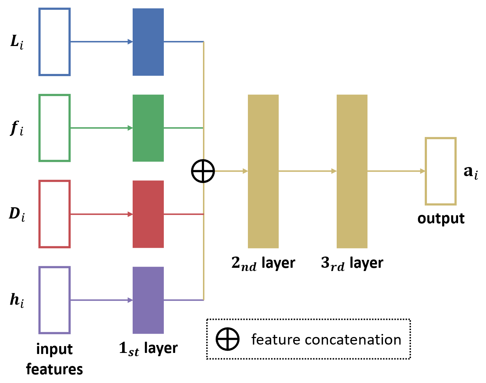

深度强化学习从入门到秃头--下篇
深度强化学习从入门到秃头–下篇
跟深度强化学习 (Deep Reinforcement Learning, DRL) 相爱相杀已经四年了，如果把本科毕业设计那半年也算上就有四年半了，放在科研这种“长途旅行”上也算是有一段时间了。DRL于我，更多的像是一种解决问题的工具，我在学习这个“工具”的过程中走过弯路踩过坑，也用这个“工具”解决了一些问题，回头望去，还是有些想法的，所以想记录一下，就算是科研回忆录吧。本系列文章计划包含三篇：《上篇》会试图用简洁的语言描述出DRL的轮廓；《中篇》会试图简明扼要地讲述一些重要的DRL算法；《下篇》会分享一些我在实践过程中的“个人经验”。与本系列文章相辅相成的是我站在巨人们 (Cart-Park, MrSyee, ElegantRL“小雅”等) 的肩膀上根据个人需求、习惯写的一个DRL项目，ZRayRL (https://github.com/ZhangRui111/ZRayRL)。最后，欢迎项目共建，欢迎文章讨论，转载请注明出处。
写在前面
本篇包含大量未经严格理论证实的个人实践经验，其合理性并不足够坚固，请在批判性思考的基础上进行参考，同时欢迎评论区交流分享自己的经验。本篇会不定期持续更新，更新内容会以“—”分割并标注更新日期，可以持续关注。
1. 强化学习算法选择
当我们需要用强化学习 (reinforcement learning, RL) 来解决某个问题时，首先要考虑的就是选择一个合适的强化学习算法。需要注意的是，目前在强化学习科研社区，关于深度强化学习算法的论文大都在游戏benchmark上进行比较，比如Atari 2600 games[1]，MuJoCo[2]等等。这固然是参考了图像识别领域的成熟经验，例如图像分类领域广泛使用的ImageNet[3] benchmark，但是，我们也要考虑到有监督学习中的benchmark通常跟应用场景紧密结合，例如，我们不会拿图像分类的算法来解决图像分割的问题，因此其论文中不同算法的比较结果对于实践有较大的参考价值。而强化学习同一种算法可以用来解决许多差异巨大的问题，从游戏AI到资源调度，甚至是目前被有监督学习主导的一些图像识别问题。因此，在应用强化学习到游戏AI之外的场景时，强化学习论文中在游戏benchmark上对不同算法的比较结果有一定参考价值，但并不一定适合当下的具体问题，所以，我们不必迷信论文中的SOTA算法。但是，也得相信科研是整体向上的，在一个较长时间维度上后来的算法在设计上肯定会有其合理性和优越性，因此，在选择强化学习算法时，一个比较稳妥的原则就是：不选择最新的，也不选择很陈旧的，而是选择经受住时间考验的又较为新的算法。结合自己的实践以及前辈的经验, 现给出如下建议。
省流版：
对于离散动作空间的任务，选择Double Dueling DQN (D3QN)
-
对于离散动作空间的任务
最经典的算法自然是发表在Nature上的DQN[4]算法，以DQN为基础衍生出了规模庞大的DQN算法家族，仅比较知名的就有Double DQN[5]，Dueling DQN[6]，DQN with Prioritized Experience Replay[7], Noisy DQN[8]，DQN with multi-step bootstrap[9]等，以及DQN算法家族的集大成者Rainbow[10]算法，正如其名字所暗示的那样，Rainbow算法集成了和DQN相关的多种改进，从而在当时登顶了DQN算法之最。不过Rainbow在带来提升的同时也极大的提高了算法的复杂性，越复杂的算法意味着越容易出错、越难以维护的代码，而且某些改进对于算法整体表现的提升相对于其带来的额外计算开销，似乎“性价比”并不高；还有一些改进引入了许多较为敏感的超参数，以调试难度的增大为代价来换取算法表现的提升，对于实践经验不足的入门选手不甚友好。因此，考虑到算法的复杂度以及稳定性，比较推荐的是集成了Double DQN，Dueling DQN的Double Dueling DQN (D3QN)算法。不过，时间充裕的话还是建议先试试更基础的DQN/Double DQN来确保代码的正确，两者在调参上极为相似，或者说，DQN可行的参数大概率也适用于Double DQN；但是，一旦集成了Dueling DQN改变了网络结构，可能在调参上就要额外花些功夫了。
-
对于连续动作空间的任务
最早的专门针对连续动作空间的深度强化学习算法可能是DDPG[11]，DDPG采用的actor-critic框架，但是其思路更偏向于DQN，也可以认为DDPG是DQN为了输出连续动作的一个衍生算法。而TD3[12]则可以看做是DDPG算法的全面升级版，在稳定性跟算法表现上均有不错的提升，因此在实践中完全可以用TD3来取代DDPG。而PPO[13]也是久经考验的算法了，PPO跟TRPO[14]有相同的思路，不过PPO在算法复杂度以及计算量上明显具有优势 (顺带一提，TRPO论文的理论细节确实没看懂，(T＿T))。PPO也可以用于解决离散动作空间的任务，不过我没用过，也就不妄加猜测其效果了。跟TD3相比，PPO似乎对于超参数的选择更加宽泛一些，也就是更容易调参。
2. 关于Reward Function的设计
机器学习，尤其是深度学习算法会涉及到许多不同的超参数，超参数的合理设置对于深度模型的成功至关重要。不少从业者会把调参的过程称为“炼丹”，算是个比较形象的比喻。强化学习的从业者或多或少都会了解、使用监督学习，个人意见来看，调试一个强化学习模型的难度是要高于监督学习模型的。而且这两者的调试重点也有所不同，监督学习自然是调整各种超参数，比如学习率大小，数据增强方式，优化器参数等。深度强化学习作为深度学习的一种，许多超参数跟监督学习里的一致，不同之处在于，监督学习所依赖的label是客观事物，而深度强化学习所依赖的reward function却需要人为设计，而且就我的实践经验来说，学习率跟reward function是对于强化学习最重要的两个因素 (具体可参照下一章的第二条tip)。Reward function的设计没有固定的模板/定式，需要根据具体的问题和能从环境得到的反馈进行合理设计，因此，十分依赖经验积累，这一过程有一个学术术语叫做“Reward Shaping”。下面我将介绍一种我认为比较好用的reward function设计思路，以供参考。
我的设计里，reward function分为两部分A和B，这两部分通过一个系数做一个加权和，即
其中A部分需要关联到任务的最终目标，我把A称为“global reward”，而B部分则需要着眼每一个动作 (action) 的即时反馈，我把B称为“local reward”。A部分对应的是任务的终极目标，也就是任务成功/失败，在reward function里占据主导地位，理论上，即使没有B部分，A部分也应当具有充分的引导智能体学会解决任务的能力。换句话说，用强化学习解决某个任务时，我们只关注任务的结果有多好，而不关注智能体是怎么一步一步做到的，A部分，即“global reward”就代表了我们的这种倾向。而B部分对应的是每一个动作的即时反馈，也就是对最终结果之前的每个行动作出反馈，代表了我们对于完成任务的过程/方式的引导。B部分，即“local reward”可以融入一些先验知识来提高exploration的效率，加快学习速度。但同时，B部分也会一定程度上抑制RL智能体在更大的决策空间上的exploration，因此可能导致最终学到的策略不是充分探索后的全局最优策略，而只是符合我们先验知识的某个局部最优策略。
还是举个例子，假设这么一个任务 (见下图，图片来自Google Research Football[17])，RL智慧体需要控制一个足球运动员带球射门，球门有守门员来防守，进攻方运动员的初始位置距离球门较远，进攻方运动员可以选择立即射门，但成功率较低，也可以选择先往任意方向带带球，换个位置后再射门。
图1. 射门游戏
针对这一任务的reward function，首先设计跟任务最终目标关联的A部分，很明确
至于B部分，根据人的先验知识，不难想到，射门位置距离球门越近，射门越容易成功，因此，可以根据动作导致的进攻方运动员跟球门距离的变化量来设计B部分，即，，这样的话，
同时，需要调整A部分跟B部分加权和的系数，保证A部分占据主导地位。若B部分权重太大，不难想象，智能体控制下的进攻方运动员会过分关注带球的“local reward”，而无法通过暂时牺牲“local reward”来获得更好的射门位置/角度。
除此之外，reward function另一个常用的设计是为每一步 (step) 添加一个小的惩罚，来“督促”RL智能体找出一个尽可能高效快速的解决方案，同时，这样也能避免RL智能体“以不变应万变”的胆小鬼策略。我把这一方式叫做“step penalty”。
最后，reward function的设计是一场研究人员跟RL智能体的“猫鼠游戏”，在实践中会发现，RL智能体总会倾向于找到“抄捷径” (shortcut) 的策略，所谓的“抄捷径”的策略不能很好地实现任务目标，但是以reward function衡量的话总能获得不错的分数。例如在上个例子中，如果不在A部分加入超时惩罚，那么智能体很可能会满足于拿到一些“local reward”而直到回合时间耗尽也不射门，因为射门有可能得到负的reward，而不射门就绝对不会得到负的reward，对于智能体，这是保守而合理的决策，但显然不是我们想要的结果。因此，我认为reward function的设计需要尽可能简洁有力，尽量使reward function跟任务的最终目标产生强关联，即使采用我上文介绍的“A+B”的模式，也要保证A部分占据主导地位，才可能避免RL智能体“抄捷径”。
3. 关于算法设计的tips
-
绝对不要！绝对不要！绝对不要在强化学习中使用批归一化 (Batch Normalization，BN)！
这是大量实践得到的经验，我也曾疑惑为什么在监督学习中效果不俗的BN会在强化学习中贻害无穷，查阅了许多资料后，我认为这一解释是比较合理的。概括来说，BN可以针对输入数据计算出稳定变化的mean和std用于神经网络输出的归一化。然而，在强化学习里，输入数据的分布是会随着智能体策略的变化而变化的，比如，在某个路口，一个倾向于左转的自动驾驶汽车收集到的用于训练的行驶数据肯定跟一个倾向右转的汽车收集到的行驶数据大不相同。既然输入数据在分布上不断变化，也就难以学到稳定的mean和std用于批归一化，更坏的情况，用旧的数据计算得到的mean和std还会对新的数据产生负面影响。
-
对于强化学习算法来说，学习率 (learning rate) 跟reward function是最重要的两个因素。
这两个因素往往直接关系到RL智能体能否解决某个问题，而其他参数则属于“锦上添花”的因素，也就是会影响到学得多快，表现多好，而不会起到成败级别的决定性的影响。建议在时间/计算资源有限时优先调整学习率和reward function。
-
关于学习率，首先从一个较小的值开始尝试，比如 1e-4，较大的学习率很容易导致训练的崩溃，在强化学习中这一现象更为显著。
在我尝试过的算法中，PPO似乎对于较大的学习率更加稳健 (存疑)？。
-
关于使用RL解决计算机视觉 (computer vision, CV) 相关的问题
在解决CV相关的问题时必然会涉及到图片的处理。图片包含大量的像素点，单个像素点通常不能跟决策形成有效的映射关系，需要对图像特征进行提取，执行这一特征提取任务的通常是一些常见的主干网络 (backbone)，例如ResNet[15]，MobileNet[16]等，提取的图像特征随后会输入预测部分，也就是value或者policy网络。
是否对特征提取网络进行端到端 (end-to-end) 的训练，我的建议是不要那么做。更具体地说，使用单独的特征提取网络来对图片进行特征提取，为特征提取网络导入在ImageNet或者其他大型benchmark上预训练过的模型参数然后固定住不再变动。使用与特征提取网络分离的value或者policy网络来学习从图像特征到决策空间 (action space) 的端到端的映射，而不是从像素点到决策空间的映射。这种做法可以极大地减少参与训练的参数总量，同时，相对于从像素点到决策空间的映射，从图像特征到决策空间的映射往往更易于学习。
另，特征提取网络建议采用较小的主干网络，比如MobileNet，虽然相对于ResNet等网络，小的主干网络在单次推理 (inference) 上节省的时间可以忽略不计，但是考虑到强化学习对样本的低利用率以及由此导致的动辄上百万次的迭代更新，小的主干网络节省出的时间还是比较可观的。
-
关于value和policy网络的结构
不同于CV或者NLP领域五花八门的网络结构设计，强化学习中value和policy网络采用多层全连接层相连的简单结构即可 (不包括上条tip中用于提取数据特征的特征提取网络)。根据要解决的问题的复杂程度，全连接层的层数可以灵活变化，最好不超过8层，通常可选3~6层。至于每层的宽度也比较灵活，最好取2的幂次，比如32，64，128，256等，通常不超过512。不过要注意的是value和policy网络的层数跟宽度大概选一下就好了，不必花太多的时间去调整，原因参照第二条tip。
另，虽说更大的value/policy网络在理论上是涵盖小的网络的参数空间的，但是在实际应用中，网络规模还是要跟任务难度相称，对于一些较为简单的任务，小的value/policy网络更容易收敛。
下面提供了一个actor-critic框架的网络结构模板，仅供参考。
1
2
3
4
5
6
7
8
9
10
11
12
13
14
15
16
17
18
19
20
21
22
23
24
25
26
27
28
29
30
31
32
33
34
35
36
37
38
39
40import torch
import torch.nn as nn
class Actor(nn.Module):
def __init__(self, in_dim: int, out_dim: int):
super(Actor, self).__init__()
self.layers = nn.Sequential(
nn.Linear(in_dim, 128),
nn.ReLU(),
nn.Linear(128, 128),
nn.ReLU(),
nn.Linear(128, out_dim),
nn.Tanh(),
)
def forward(self, state: torch.Tensor) -> torch.Tensor:
action = self.layers(state)
return action
class Critic(nn.Module):
def __init__(self, in_dim: int):
super(Critic, self).__init__()
self.layers = nn.Sequential(
nn.Linear(in_dim, 128),
nn.ReLU(),
nn.Linear(128, 128),
nn.ReLU(),
nn.Linear(128, 1),
)
def forward(
self, state: torch.Tensor, action: torch.Tensor
) -> torch.Tensor:
x = torch.cat((state, action), dim=-1)
value = self.layers(x)
return value -
在搭建value/policy网络时注意激活函数，尤其是输出层的激活函数。例如，value网络用于对value进行预测，而value通常有正有负且范围较大，如果不小心在输出层加上Tanh激活函数就意味着永远不可能学好。
-
对state/observation进行数值归一化可以约束数值范围，通常是可以加快训练的。常见的数值归一化有两种：min-max归一化和正态归一化 (有的地方又称“标准化”)。对其区分可以参考文章1，文章2和文章3。
- min-max归一化
是输入数据/特征的最小值, 是最大值。
- 正态归一化
是输入数据/特征的均值, 是标准差。
-
有时，我们会遇到state/observation包含多个不同来源的情况，来源不同的各部分有不同的意义，且数值差异较大，这时，建议采用一种“limited-connection”的网络结构。如下图所示，各个子部分分别通过一层全连接层，从而得到初步处理的特征，之后再连接在一起通过后面的神经网络。
图2. “limited-connection”的网络结构
这么做有几个好处：(1) 显著减少网络参数，尤其指分别处理各个子部分特征的第一层；(2) 各个子部分特征的数值范围差异较大，“limited-connection”结构下可以方便地分别进行数值归一化，同时各个子部分特征的原始尺寸可能差异较大，但是通过网络第一层可以方便的调整各个子部分的特征尺度，避免某一子部分特征对于action输出的影响过大；(3) 各个子部分特征的意义不同，在这种情况下，先分别进行初步的处理/映射，再连接更高层的特征通常是更为有效的做法。
-
在actor-critic框架的RL算法中，critic的学习率通常要比actor的学习率大一些，比如2~5倍。
-
合适的exploration策略对于RL智能体的训练十分重要，保证充分的exploration是RL智能体学到最优策略的必要条件。
常见的exploration机制有DQN系列的-greedy policy和policy gradient系列的entropy coefficient，无论在哪种情况下，退火机制 (exploration decay) 通常是不错的选择。对于DQN系列的-greedy policy，这通常不是个问题，exploration的参数控制 () 跟value function的值没有强关联，换句话说，即使exploration太强导致training reward很差也不会影响testing reward。不过在policy gradient系列的entropy coefficient中，entropy coefficient取较大的值固然可以保证强的exploration，但是也会导致输出action distribution趋向平均，即，好的action跟坏的action的probability差距不大，这会降低policy的安全冗余性，形象地说就是“走钢丝一般的policy”，这对于testing是不利的，因此，在训练过程中逐渐减小entropy coefficient来保证较为鲜明果断的policy对于policy gradient系列算法是很必要的。
4. 可选的tips
某些情况下可能有奇效，建议最后再尝试。
-
梯度修剪 (gradient clipping)
-
换一个随机数种子
常见的可以设置随机数种子的包有numpy，random，torch，tensorflow等，设置固定的随机数种子对于强化学习算法结果的复现性是有益的，是在写代码时比较建议的做法，如下所示。
1
2
3
4
5
6
7
8
9import numpy as np
import random
import torch
# set the random seed
seed = 0
np.random.seed(seed)
random.seed(seed)
torch.manual_seed(seed)更换随机数种子可能对算法结果没有影响，也可能有很大的影响，emmm，用玄学对抗玄学？通常，在paper中汇报的数据需要用多个随记种子取均值来增加结果的说服力。
5. 不知道放在哪里合适的tips
-
奥卡姆剃刀 (Occam’s Razor) 原则：若无必要，勿增实体 (entities should not be multiplied beyond necessity)。
尽量保持一些细节设计上的简洁性，不要试图用一个复杂的结构或者复杂的流程来解决一个不是足够重要的问题。比如，在reward function的设计中，引入太多包含先验知识的人为引导往往会导致智能体学到“意料之外”的策略。
-
实事求是
论文中表现更好的算法不见得在每个实际任务中都表现更好；同理，论文中效果不错的idea/trick不一定在实际任务中有用。保持开放又怀疑的态度，实事求是，多尝试，多思考。
参考 (Reference)
- [1] Bellemare, Marc G., et al. “The arcade learning environment: An evaluation platform for general agents.” Journal of Artificial Intelligence Research 47 (2013): 253-279.
- [2] Todorov, Emanuel, Tom Erez, and Yuval Tassa. “Mujoco: A physics engine for model-based control.” 2012 IEEE/RSJ international conference on intelligent robots and systems. IEEE, 2012.
- [3] Deng, Jia, et al. “Imagenet: A large-scale hierarchical image database.” 2009 IEEE conference on computer vision and pattern recognition. Ieee, 2009.
- [4] Mnih, Volodymyr, et al. “Human-level control through deep reinforcement learning.” nature 518.7540 (2015): 529-533.
- [5] Van Hasselt, Hado, Arthur Guez, and David Silver. “Deep reinforcement learning with double q-learning.” Proceedings of the AAAI conference on artificial intelligence. Vol. 30. No. 1. 2016.
- [6] Wang, Ziyu, et al. “Dueling network architectures for deep reinforcement learning.” International conference on machine learning. PMLR, 2016.
- [7] Schaul, Tom, et al. “Prioritized experience replay.” arXiv preprint arXiv:1511.05952 (2015).
- [8] Fortunato, Meire, et al. “Noisy networks for exploration.” arXiv preprint arXiv:1706.10295 (2017).
- [9] Sutton, Richard S. “Learning to predict by the methods of temporal differences.” Machine learning 3.1 (1988): 9-44.
- [10] Hessel, Matteo, et al. “Rainbow: Combining improvements in deep reinforcement learning.” Thirty-second AAAI conference on artificial intelligence. 2018.
- [11] Lillicrap, Timothy P., et al. “Continuous control with deep reinforcement learning.” arXiv preprint arXiv:1509.02971 (2015).
- [12] Fujimoto, Scott, Herke Hoof, and David Meger. “Addressing function approximation error in actor-critic methods.” International conference on machine learning. PMLR, 2018.
- [13] Schulman, John, et al. “Proximal policy optimization algorithms.” arXiv preprint arXiv:1707.06347 (2017).
- [14] Schulman, John, et al. “Trust region policy optimization.” International conference on machine learning. PMLR, 2015.
- [15] He, Kaiming, et al. “Deep residual learning for image recognition.” Proceedings of the IEEE conference on computer vision and pattern recognition. 2016.
- [16] Howard, Andrew G., et al. “Mobilenets: Efficient convolutional neural networks for mobile vision applications.” arXiv preprint arXiv:1704.04861 (2017).
- [17] Kurach, Karol, et al. “Google research football: A novel reinforcement learning environment.” Proceedings of the AAAI Conference on Artificial Intelligence. Vol. 34. No. 04. 2020.